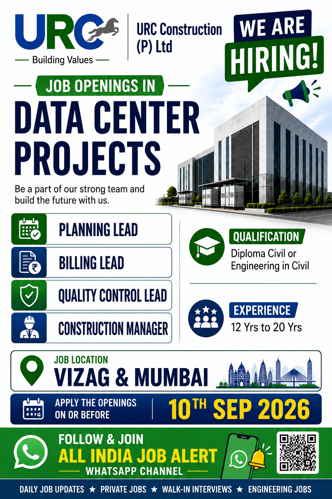

URC Construction (P) Ltd has announced new job opportunities for experienced professionals who are interested in working on Data Center Projects. According to the recruitment advertisement, the company is hiring qualified and experienced candidates for important leadership and management positions. The available opportunities include Planning Lead, Billing Lead, Quality Control Lead and Construction Manager.
This recruitment opportunity can be useful for experienced civil engineering professionals who have worked in construction projects and are looking for senior-level career opportunities. The advertised job locations are Vizag and Mumbai. Candidates with Diploma in Civil Engineering or an Engineering qualification in Civil Engineering and relevant experience may be eligible to apply.
The experience requirement mentioned in the job advertisement is approximately 12 years to 20 years, depending on the position and suitability of the candidate. Therefore, this recruitment drive is mainly suitable for experienced professionals who have a strong background in construction execution, planning, billing, quality management and project coordination.
Get daily private company jobs, construction jobs, engineering vacancies and walk-in interview updates across India.
JOIN WHATSAPP CHANNELThe construction industry continues to create employment opportunities for skilled and experienced professionals. Large infrastructure, commercial, industrial and specialized projects require experienced engineers and managers who can handle different stages of project execution. Data Center Projects are highly specialized construction projects where planning, coordination, quality control, billing and execution play an important role.
URC Construction is looking for experienced candidates who can contribute to project delivery and construction management. Candidates applying for these positions should have a good understanding of civil construction activities and project management practices. Depending on the role, the selected candidates may be responsible for coordinating teams, monitoring progress, managing construction activities, maintaining quality standards, preparing bills and reports, and ensuring that work is completed according to project requirements.
Candidates with previous experience in large construction projects may have an advantage. Applicants should ensure that their resume clearly mentions their educational qualification, total work experience, current company, current designation, important project experience and technical skills.
| Sr. No. | Position | Experience |
|---|---|---|
| 1 | Planning Lead | 12 to 20 Years |
| 2 | Billing Lead | 12 to 20 Years |
| 3 | Quality Control Lead | 12 to 20 Years |
| 4 | Construction Manager | 12 to 20 Years |
The Planning Lead position is suitable for experienced construction professionals with knowledge of project planning and monitoring. Planning is one of the most important activities in a construction project because it helps management understand the project schedule, work progress and upcoming activities.
A Planning Lead may be responsible for preparing project schedules, monitoring progress, coordinating with engineering and construction teams, reviewing delays and preparing progress reports. Candidates with experience in planning large civil or infrastructure projects can highlight this experience in their resume.
The Billing Lead position is intended for experienced professionals who understand construction billing and measurement activities. Billing is an important part of project management because it involves preparing bills based on completed work and maintaining proper documentation.
Candidates with experience in quantity verification, measurement sheets, contractor bills, client bills and construction documentation may find this position relevant. Applicants should mention their billing and quantity-related experience clearly in their updated CV.
Quality Control is an essential department in construction projects. The Quality Control Lead may be responsible for monitoring construction quality, inspecting completed work and ensuring that activities are carried out according to approved specifications and project standards.
Experienced civil engineering professionals who have worked in QA/QC departments can apply if they meet the experience and qualification requirements. Knowledge of construction materials, inspection procedures and quality documentation can be useful for this type of role.
The Construction Manager position is a senior-level opportunity for professionals who have extensive experience in project execution. A Construction Manager may coordinate multiple teams and monitor the overall progress of construction activities.
Responsibilities can include site coordination, manpower management, work progress monitoring, safety coordination, material planning and communication with project management teams. Candidates with strong leadership and communication skills may be suitable for this position.
According to the recruitment poster, candidates should have one of the following educational qualifications:
Candidates should ensure that their educational and professional details are properly updated in their resume. Experience in relevant construction and infrastructure projects should also be highlighted.
The advertised experience range is between 12 years and 20 years. This means that the company is looking for experienced professionals for these senior-level positions. Candidates should have sufficient practical knowledge and professional experience in their respective fields.
Before applying, candidates should compare their total experience and technical background with the requirements of the position. Applicants with relevant experience in civil construction, commercial projects, industrial projects or other large infrastructure projects may be interested in these opportunities.
Candidates should be prepared to work at the project locations mentioned in the recruitment advertisement. Before applying, candidates can confirm project-related requirements and work location details through the official contact details provided below.
Email: careers@urcc.in
Phone No: 9566653511 / 7845875511
Last Date to Apply: 10th September 2026
Candidates should send an updated and professional CV. The resume should include personal contact details, educational qualification, total experience, current company, current designation, previous employment details and important project experience.
Applicants are advised to mention the position they are applying for in the email subject line. For example, candidates applying for Planning Lead can write Application for Planning Lead Position in the subject line.
Before applying, candidates should prepare their updated professional documents. Having a properly updated resume can improve the quality of an application and make it easier for recruiters to understand the candidate's experience.
Candidates should apply before the closing date mentioned in the recruitment advertisement. The last date to apply is 10th September 2026. Applicants should not wait until the last day and should send their updated CV as early as possible.
Job seekers should carefully verify the information before making any travel or financial decisions. Candidates should use official contact details for recruitment communication. No job seeker should pay money to an unauthorized person in exchange for a job or interview opportunity.
Candidates are encouraged to apply only if their qualifications and experience are relevant to the advertised positions. A well-prepared resume with clearly mentioned responsibilities and project experience can be helpful during the selection process.
Join All India Job Alert WhatsApp Channel for private company jobs, civil engineering jobs, construction jobs and recruitment updates.
JOIN ALL INDIA JOB ALERTJoin our WhatsApp Channel for the latest job vacancies and walk-in interview updates.
JOIN WHATSAPP CHANNEL NOW